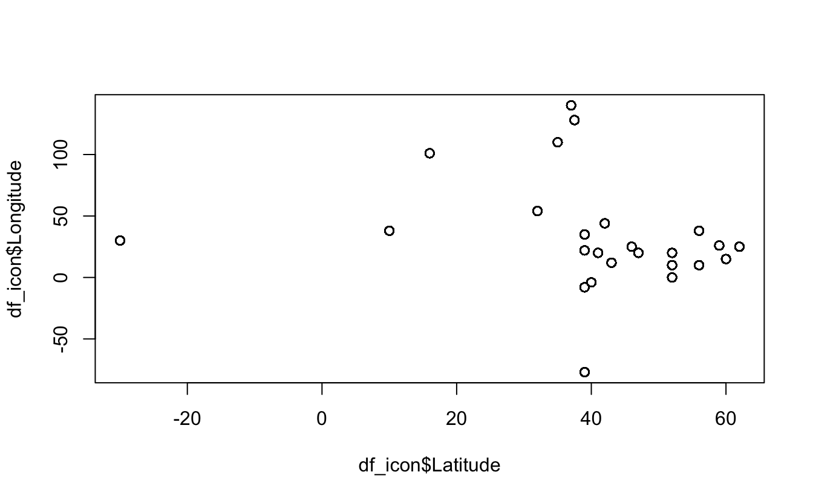

# install packages
install.packages("tidyverse")
install.packages("here")Literate programming
Set-up
Set-up environment: load packages and data
Packages
Install the tidyverse and here packages. This will not run when we render the script.
Load required packages.
# load packages
library(tidyverse)
library(here)Print the project directory filepath using the here package.
# print project directory
here()[1] "/Users/danielapalleschi/Documents/ZAS/zas-reproducibility-2024"Load data
df_icon <- read_csv(here("data", "cwiek_2021-online_cleaned.csv"))Data exploration
Take a look at the data using glimpse() from the dplyr package.
glimpse(df_icon)Rows: 75,391
Columns: 28
$ Language <chr> "AL", "AL", "AL", "AL", "AL", "AL", "AL", "AL", "AL", "…
$ ID <chr> "AL_2110262", "AL_2110262", "AL_2110262", "AL_2110262",…
$ L1 <chr> "albanian", "albanian", "albanian", "albanian", "albani…
$ L2 <chr> "english, french", "english, french", "english, french"…
$ EnglishL2YesNo <lgl> TRUE, TRUE, TRUE, TRUE, TRUE, TRUE, TRUE, TRUE, TRUE, T…
$ L2_simplified <chr> "english L2", "english L2", "english L2", "english L2",…
$ Dialect <chr> "tosk, standard", "tosk, standard", "tosk, standard", "…
$ Sex <chr> "F", "F", "F", "F", "F", "F", "F", "F", "F", "F", "F", …
$ Age <dbl> 41, 41, 41, 41, 41, 41, 41, 41, 41, 41, 41, 41, 41, 41,…
$ Meaning <chr> "sharp", "rock", "that", "water", "big", "woman", "chil…
$ Team <chr> "NC", "KR", "BW", "SU", "GB", "BW", "IL", "IL", "NC", "…
$ UniqueItem <chr> "NC_sharp.wav", "KR_rock.wav", "BW_that.wav", "SU_water…
$ Rep <dbl> 3, 3, 3, 3, 2, 1, 1, 1, 1, 2, 3, 1, 2, 1, 1, 1, 1, 2, 1…
$ Choice <chr> "sharp", "water", "eat", "water", "bad", "bad", "child"…
$ ACC <dbl> 1, 0, 0, 1, 0, 0, 1, 1, 1, 0, 0, 1, 1, 1, 1, 1, 1, 1, 1…
$ EnglishL2 <lgl> TRUE, TRUE, TRUE, TRUE, TRUE, TRUE, TRUE, TRUE, TRUE, T…
$ Name <chr> "Albanian", "Albanian", "Albanian", "Albanian", "Albani…
$ ISO639.3 <chr> "als", "als", "als", "als", "als", "als", "als", "als",…
$ Script <chr> "roman", "roman", "roman", "roman", "roman", "roman", "…
$ Genus <chr> "IE", "IE", "IE", "IE", "IE", "IE", "IE", "IE", "IE", "…
$ Autotyp_Area <chr> "Europe", "Europe", "Europe", "Europe", "Europe", "Euro…
$ Continent <chr> "W and SW Eurasia", "W and SW Eurasia", "W and SW Euras…
$ Longitude <dbl> 20, 20, 20, 20, 20, 20, 20, 20, 20, 20, 20, 20, 20, 20,…
$ Latitude <dbl> 41, 41, 41, 41, 41, 41, 41, 41, 41, 41, 41, 41, 41, 41,…
$ Family <chr> "IE", "IE", "IE", "IE", "IE", "IE", "IE", "IE", "IE", "…
$ category <chr> "property", "noun", "property", "noun", "property", "no…
$ subcategory <chr> "adjective", "inanimate", "demonstrative", "inanimate",…
$ Animacy <chr> "animate", "inanimate", "animate", "inanimate", "animat…Summary statistics of longitude and latitude.
summary(df_icon$Latitude) Min. 1st Qu. Median Mean 3rd Qu. Max.
-30.00 39.00 43.00 43.89 52.00 62.00 summary(df_icon$Longitude) Min. 1st Qu. Median Mean 3rd Qu. Max.
-77.00 10.00 20.00 27.94 35.00 140.00 Visualise distribution of reading times (milliseconds) for critical sentence regions. I’ll use base R functions to keep things simple for now.
plot(df_icon$Latitude, df_icon$Longitude)
Session Info
sessionInfo()R version 4.4.1 (2024-06-14)
Platform: aarch64-apple-darwin20
Running under: macOS Sonoma 14.6
Matrix products: default
BLAS: /Library/Frameworks/R.framework/Versions/4.4-arm64/Resources/lib/libRblas.0.dylib
LAPACK: /Library/Frameworks/R.framework/Versions/4.4-arm64/Resources/lib/libRlapack.dylib; LAPACK version 3.12.0
locale:
[1] en_US.UTF-8/en_US.UTF-8/en_US.UTF-8/C/en_US.UTF-8/en_US.UTF-8
time zone: Europe/Berlin
tzcode source: internal
attached base packages:
[1] stats graphics grDevices datasets utils methods base
other attached packages:
[1] here_1.0.1 lubridate_1.9.3 forcats_1.0.0 stringr_1.5.1
[5] dplyr_1.1.4 purrr_1.0.2 readr_2.1.5 tidyr_1.3.1
[9] tibble_3.2.1 ggplot2_3.5.1 tidyverse_2.0.0
loaded via a namespace (and not attached):
[1] bit_4.0.5 gtable_0.3.5 jsonlite_1.8.8 crayon_1.5.2
[5] compiler_4.4.1 renv_1.0.7 tidyselect_1.2.1 parallel_4.4.1
[9] scales_1.3.0 yaml_2.3.8 fastmap_1.2.0 R6_2.5.1
[13] generics_0.1.3 knitr_1.47 htmlwidgets_1.6.4 rprojroot_2.0.4
[17] munsell_0.5.1 pillar_1.9.0 tzdb_0.4.0 rlang_1.1.4
[21] utf8_1.2.4 stringi_1.8.4 xfun_0.45 bit64_4.0.5
[25] timechange_0.3.0 cli_3.6.2 withr_3.0.0 magrittr_2.0.3
[29] digest_0.6.35 grid_4.4.1 vroom_1.6.5 rstudioapi_0.16.0
[33] hms_1.1.3 lifecycle_1.0.4 vctrs_0.6.5 evaluate_0.24.0
[37] glue_1.7.0 fansi_1.0.6 colorspace_2.1-0 rmarkdown_2.27
[41] tools_4.4.1 pkgconfig_2.0.3 htmltools_0.5.8.1